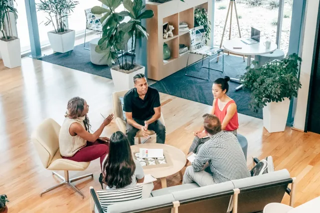

Tips Memilih Jasa Pembuatan Website yang Tepat untuk Bisnis

Tips memilih vendor dan jasa pembuatan website profesional di Banyuwangi untuk profil perusahaan, UMKM, toko online, dan landing page konversi yang cepat, aman, dan berorientasi hasil.
Banyuwangi kini bertransformasi menjadi pusat ekonomi kreatif dan pariwisata unggulan di Jawa Timur. Mulai dari produsen kopi lereng Gunung Ijen, pengrajin anyaman bambu Gintangan, kuliner khas, hingga biro perjalanan wisata; ribuan calon konsumen mencari produk dan layanan tersebut melalui Google setiap harinya.
Memiliki website resmi milik sendiri adalah langkah krusial untuk mengamankan reputasi bisnis, memperkuat kredibilitas di hadapan calon klien, dan meningkatkan transaksi tanpa ketergantungan penuh pada algoritma media sosial.
Memahami Kebutuhan Spesifik Perusahaan
Langkah pertama sebelum menyewa jasa developer adalah memetakan tujuan utama website Anda. Apakah untuk memamerkan katalog produk UMKM dengan tombol pesan WhatsApp otomatis, membangun profil korporat resmi untuk tender pemerintah/swasta, atau membuat landing page konversi tinggi untuk promosi iklan digital?
Developer profesional yang berintegritas tidak akan langsung menawarkan paket termahal, melainkan mendengarkan alur kerja usaha Anda dan merekomendasikan struktur halaman yang paling efektif mengonversi pengunjung menjadi pelanggan.
Pengalaman, Legalitas, dan Portofolio
Mintalah tautan website nyata yang pernah dibangun oleh calon pengembang, bukan sekadar tangkapan layar (screenshot) atau mockup fiktif. Uji langsung apakah website klien mereka saat ini aktif, lancar diakses dari berbagai provider seluler, dan ramah pengguna di ponsel cerdas.
Standar Fasilitator dan Rekayasa Kode Bersertifikat
Lebih dari 75% pengguna internet di Indonesia menjelajah menggunakan perangkat mobile. Jika website Anda membutuhkan waktu muat lebih dari 3 detik, calon konsumen akan langsung menutup halaman dan beralih ke kompetitor.

Pastikan pengembang menguasai teknik optimasi modern seperti kompresi gambar format WebP, minifikasi script JavaScript dan stylesheet CSS, serta konfigurasi HTTP/2 caching server berkecepatan tinggi.
Aspek Keamanan dan Standar Operasional Prosedur (SOP)
Pastikan nama domain utama (.com atau .id) didaftarkan atas identitas email dan entitas bisnis Anda sendiri. Banyak kasus terjadi di mana pemilik usaha kehilangan kendali domain ketika masa kontrak developer berakhir. Di IsenDev, kami menjamin kepemilikan aset digital 100% berada di tangan klien.
Transparansi Fasilitas dan Paket Penawaran
Mintalah rincian transparan atas fasilitas yang Anda peroleh: apakah sudah mencakup domain kustom, kuota cloud hosting SSD tahun pertama, sertifikat keamanan SSL HTTPS, garansi perbaikan bug teknis, hingga sesi pelatihan pengelolaan website untuk staf internal Anda.
FAQ
Kesimpulan
Memilih jasa pembuatan website adalah langkah awal yang strategis untuk memperkuat pondasi pemasaran digital bisnis Anda. Pastikan Anda bermitra dengan tim pengembang yang mengutamakan kecepatan akses, kepemilikan aset resmi, dan komitmen pendampingan jangka panjang.
Memilih vendor website bukan sekadar mencari penawaran termurah, melainkan memilih mitra strategis yang mampu menerjemahkan visi perusahaan menjadi aset digital yang cepat, aman, berbobot SEO, dan berdampak jangka panjang.


Siap Memulai Proyek Website Anda?
Dapatkan konsultasi gratis dan rancangan estimasi biaya transparan tanpa komitmen dari tim IsenDev Banyuwangi.